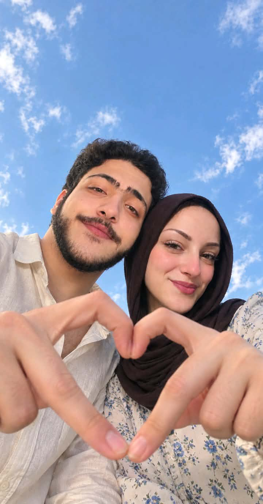
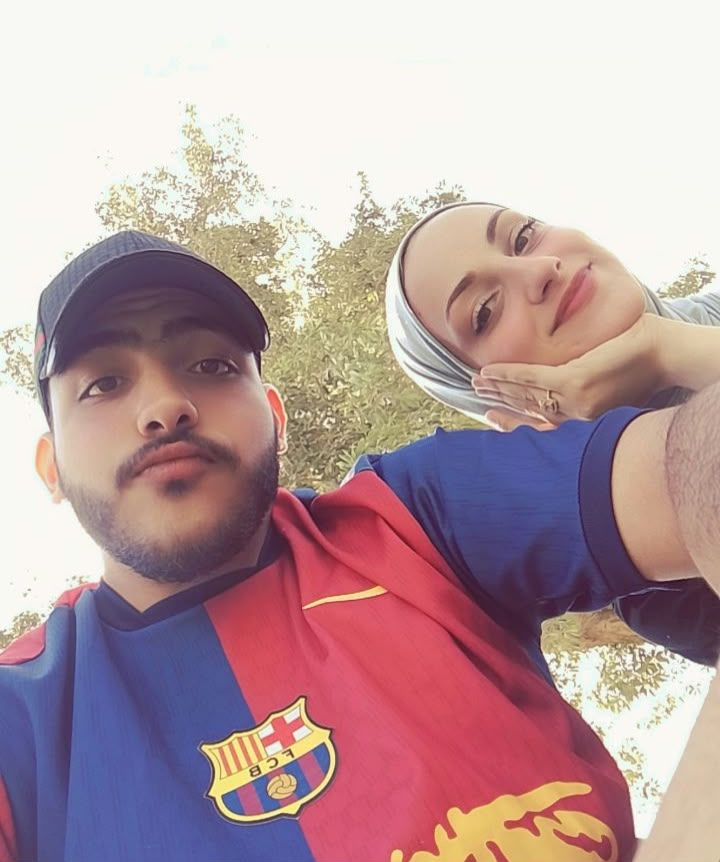
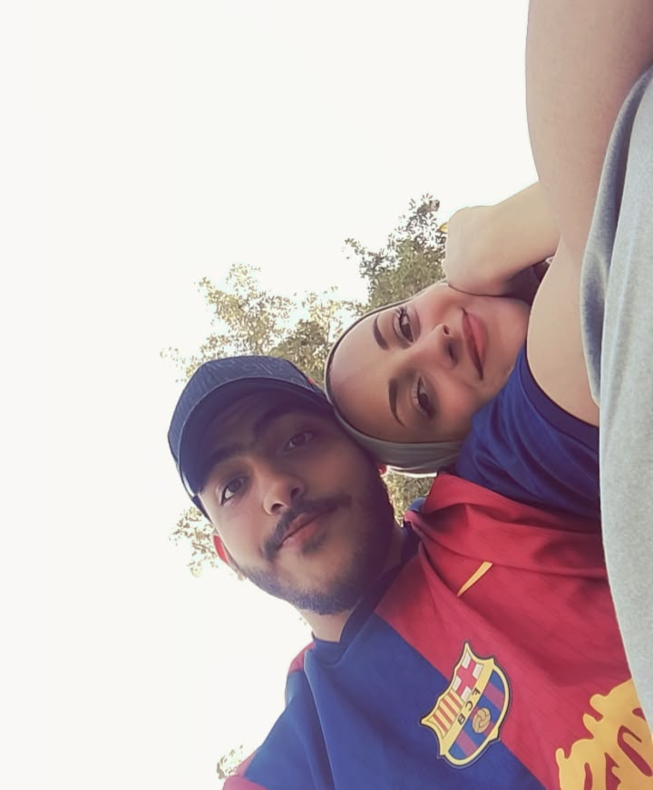
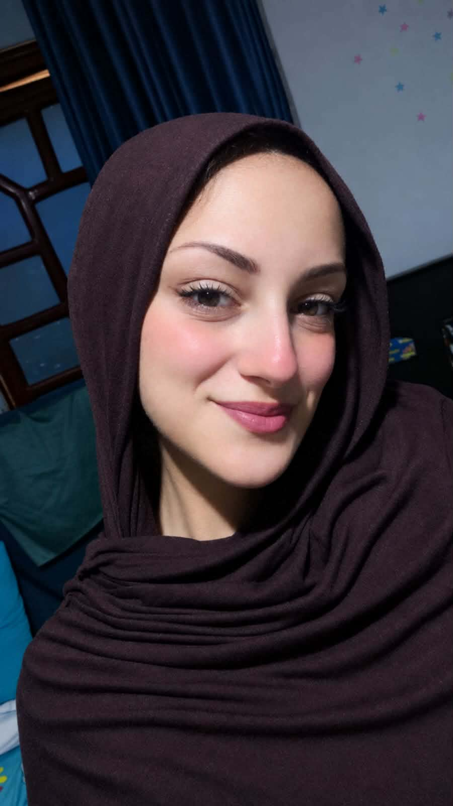
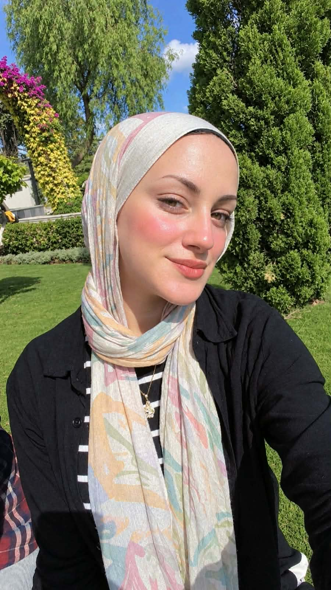
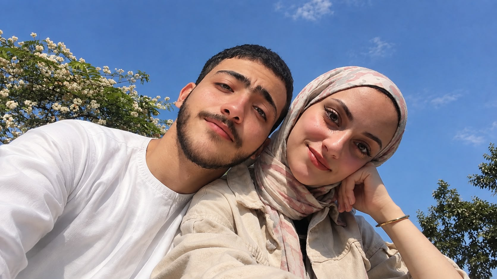
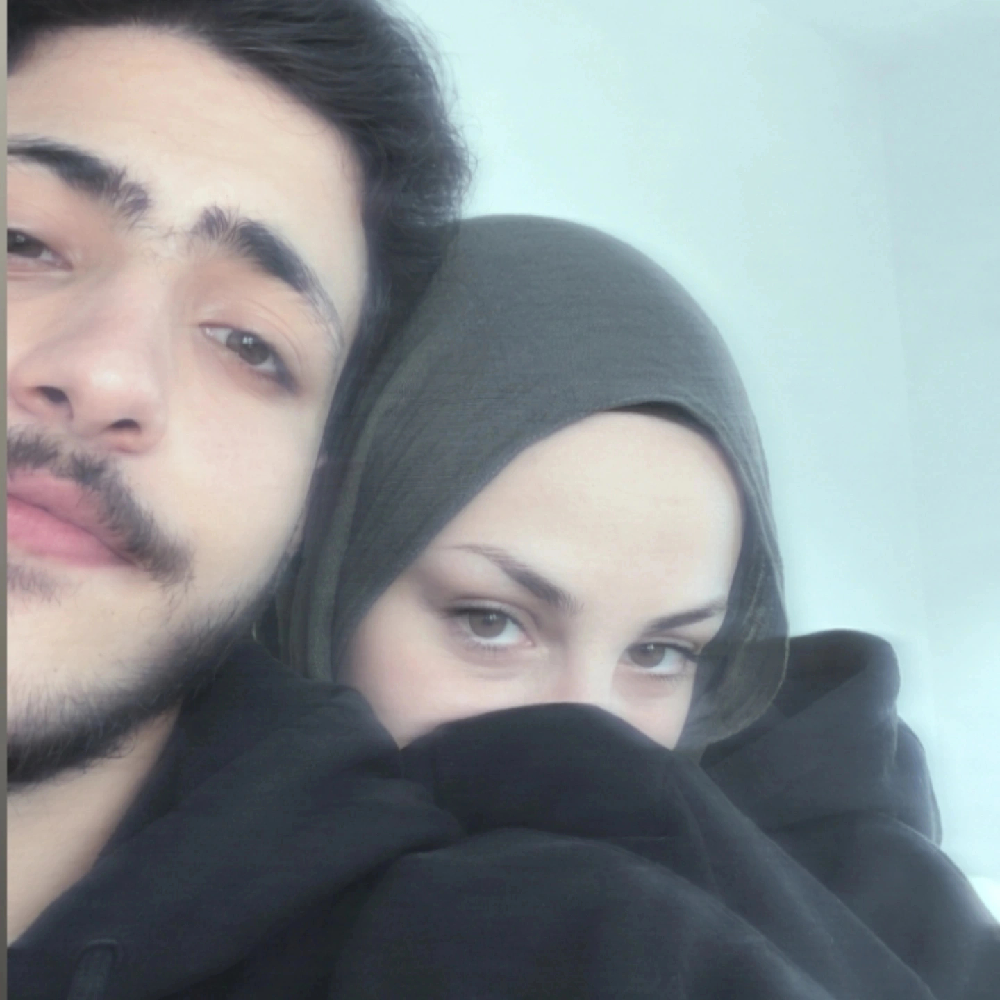

✦ A LITTLE WISH AT 11:11 ✦
11:11
إلى جنجونة.. حبيبتي ❤️
في يوم مميز، حبيت أسيبلك ذكرى تفضّل معاكي
💌 عندي كلام كتير أوي عايز أقولهولك...
❤️
11 / 11 • 11:11 PM? • Made just for you
إلى جنجونة.. حبيبتي ❤️
في يوم مميز، حبيت أسيبلك ذكرى تفضّل معاكي
💌 عندي كلام كتير أوي عايز أقولهولك...
11 / 11 • 11:11 PM? • Made just for you
11 / 11 — 11:11
عارفة يا جنجونة، أنا مش عارف أبدأ الرسالة دي منين، ولا حتى عارف إزاي ممكن أكتب كل اللي جوايا في كلام، لأن مهما كتبت ومهما قلت، هيفضل جوايا كلام أكتر بكتير من اللي قدرت أوصلهولك. بس أنا النهارده حبيت أعملك حاجة مختلفة، حاجة تفضل معاكي، وتكون ذكرى حلوة ترجعي لها في أي وقت، وتفتكري إن في يوم من الأيام كان فيه شخص حبك من قلبه، وكان نفسه يشوفك أسعد واحدة في الدنيا.
يمكن يوم 11/11 بالنسبالناس مجرد تاريخ مميز، والساعة 11:11 مجرد وقت الناس بتحب تتمنى فيه أمنيات، لكن بالنسبالي أنا حبيت أخلي اليوم ده مرتبط بيكي إنتِ. حبيت يكون فيه حاجة مخصوص ليكي، حاجة لما تشوفي التاريخ ده بعد كده تفتكري إن فيه رسالة اتعملت علشانك، وإن فيه حد كان نفسه يقولك كلام كتير أوي، لدرجة إنه قرر يعملك موقع كامل علشان يحط فيه جزء من اللي جواه.
جنجونة، أنا بحبك. ❤️
عارفة إن الكلمة دي ممكن تكون اتقالت كتير، وممكن تسمعيها مني كل يوم، بس أنا عمري ما حبيت إنها تبقى مجرد كلمة بنقولها وخلاص. أنا عايزك تعرفي إن ورا الكلمة دي تفاصيل كتير، وإن كل مرة بقولك فيها إني بحبك، بيكون جوايا إحساس مختلف، وإني مهما اتعودت أقولها مش هتكون كلمة عادية بالنسبالي أبدًا.
بحب وجودك في حياتي، بحب إنك بقيتي جزء من يومي وتفكيري، بحب إني ألاقي نفسي عايز أحكيلك عن تفاصيل يومي حتى لو كانت تفاصيل بسيطة جدًا، وبحب إن فيه إنسانة معينة لما تحصل معاها حاجة حلوة أحب أكون أول واحد يعرف، ولما تكون مضايقة أتمنى أكون سبب في إن يومها يبقى أحسن.
بحب كلامنا، وضحكنا، وهزارنا، وتفاصيلنا الصغيرة اللي يمكن محدش غيرنا يفهم قيمتها. بحب اللحظات اللي بنتكلم فيها من غير ما نحس بالوقت، وبحب حتى أبسط الحاجات اللي بتحصل بينا، لأن ببساطة هي بقت غالية عندي علشان إنتِ جزء منها.
أنا مش عايزك تكوني مجرد شخص موجود في حياتي لفترة وخلاص، أنا نفسي تكوني الشخص اللي أكمل معاه حياتي كلها. مش عايز أفضل أحكيلك عن أحلامي وبس، أنا نفسي في يوم نصحى ونلاقي نفسنا بنعيش الأحلام دي سوا.
عارفة أنا نفسي في إيه؟ نفسي في يوم يكون لينا بيت واحد، بيت يجمعنا بالحلال، ويبقى لينا فيه حكايات وذكريات وتفاصيل محدش يعرفها غيرنا. بيت نرجعله آخر اليوم ونحس إننا رجعنا لمكاننا، للمكان اللي فيه راحتنا وأماننا وناسنا.
نفسي في يوم أصحى وألاقيكي جنبي، وأبدأ يومي وأنا مطمن إنك معايا، ونفطر سوا، ونتكلم عن يومنا، ونخطط لحاجات بسيطة وكبيرة، ونختلف أحيانًا على حاجات تافهة ونضحك بعدها، ونعيش تفاصيل الحياة العادية اللي يمكن ناس كتير تشوفها عادية، لكنها بالنسبالي هتبقى أجمل حاجة في الدنيا.
نفسي يبقى عندنا بيت فيه ضحكتنا، وصورنا، وذكرياتنا، وكل ركن فيه يحكي حكاية من حكاياتنا. نفسي نختار حاجات البيت سوا، ونختلف على لون حاجة أو مكان حاجة، ونقعد نخطط لكل تفصيلة كأننا بنبني عالمنا الصغير بإيدينا.
نفسي أرجع من يوم طويل وأحكيلك عملت إيه، وإنتِ تحكيلي يومك كان عامل إزاي. نفسي نبقى لبعض السند والراحة، ونكون أول ناس بتفرح لنجاح بعض، وأول ناس بتشجع بعض وقت التعب.
ونفسي لما تعدي سنين طويلة، نبص لبعض ونفتكر أيامنا الأولى، ونضحك على كلامنا ومواقفنا واللحظات اللي كنا بنحلم فيها باليوم اللي هنبقى فيه تحت سقف واحد.
يا جنجونة، أنا مش بحلم بحياة مثالية مفيهاش مشاكل ولا أيام صعبة، لأن الحياة مش دايمًا بتكون سهلة، بس أنا بحلم إننا نكون فريق واحد، نعرف نتكلم ونفهم بعض، ونعدي أي اختلاف بالهدوء والاحترام، ونفضل نختار بعض كل يوم.
أنا عايز أكون شخص تفتخري بيه، وتكوني فخورة إنك اخترتيه، وعايز أشوفك بتحققي كل أحلامك، وتوصلي لكل حاجة نفسك فيها. مش عايزك تتنازلي عن أحلامك علشاني، بالعكس، نفسي أكون من أكتر الناس اللي يشجعوكي ويساعدوكي توصليلها.
عايز أشوف ضحكتك في كل مراحل حياتك، في نجاحاتك، في لحظات فرحتك، وفي الأيام اللي بتكون محتاجة فيها حد يسمعك ويفهمك. وعايزك تعرفي إنك تستاهلي كل خير وكل فرحة وكل حاجة حلوة في الدنيا.
ولو في يوم اختلفنا، أتمنى نفتكر إننا مش ضد بعض، وإن الهدف عمره ما يكون مين كسب النقاش، لكن إزاي نفضل فاهمين بعض ومقدرين بعض. ولو في يوم الدنيا كانت صعبة، أتمنى نعرف نطمن بعض ونفتكر ليه بدأنا نحلم بكل ده من الأساس.
عارفة يا حبيبتي، فيه حاجة جميلة في فكرة المستقبل، إننا لسه عندنا حاجات كتير مستنيانا. لسه فيه أماكن هنروحها، وصور هنتصورها، وضحكات هنضحكها، ومواقف هتبقى ذكريات نحكيها بعدين. لسه فيه أيام كتير هنقول فيها لبعض: فاكرة لما كنا بنحلم باليوم ده؟
وأنا مستني اليوم اللي أبص فيه في عينيكي وأقولك إن كل الأحلام اللي كنا بنتكلم عنها بقت حقيقة، وإننا أخيرًا بقينا في بيت واحد، وبقينا بنعيش الحياة اللي تمنيناها ودعينا ربنا بيها.
نفسي أكون سبب في طمأنينتك مش قلقك، وفي فرحتك مش حزنك، ونفسي أتعلم كل يوم إزاي أحبك بطريقة تخليكي تحسي بالتقدير والاهتمام والاحترام اللي تستحقيهم.
ويمكن أنا مش بعرف أعبّر في كل وقت، ويمكن ساعات الكلام اللي جوايا بيكون أكبر من قدرتي على شرحه، بس أتمنى عمرك ما تشكي إنك غالية عندي، وإن وجودك في حياتي حاجة أنا بقدرها جدًا.
جنجونة، يا أجمل بنوتة، يا حبيبتي، يا صاحبة مكانة كبيرة في قلبي... ❤️
أنا مش عايز منك تكوني مثالية، ولا عايز أيامنا كلها تكون وردية، أنا عايزنا نكون على طبيعتنا، نضحك بجد، نتكلم بجد، نفهم بعض بجد، ونبني حاجة حقيقية تستاهل إننا نحافظ عليها.
عايز أفتكر معاكي كل مرحلة عدينا بيها، وكل خطوة قربتنا من حلمنا، وكل مرة ربنا استجاب فيها لدعوة كانت جوانا. وعايز أفضل أشوفك بتكبري وتنجحي وتحققي اللي نفسك فيه، وأكون أنا كمان بسعى علشان أبقى أحسن وأقدر أبني مستقبل نفتخر بيه إحنا الاتنين.
وكل اللي بطلبه من ربنا إنه يكتب لنا الخير، ولو كان في وجودنا مع بعض خير لينا، يقرب المسافات، ويسهل الطريق، ويجمعنا بالحلال في أحسن وقت وأجمل حال، ويرزقنا حياة فيها مودة ورحمة وستر ورضا.
يا رب ييجي يوم نقرأ فيه الرسالة دي وإحنا في بيتنا، ونفتكر إن دي كانت مفاجأة 11/11، وإن كان فيه قلب بيتمنى اليوم اللي يقدر فيه يقولك: أخيرًا بقينا مع بعض في بيت واحد.
وعايزك تعرفي إن الرسالة دي مش مرتبطة بيوم واحد، ولا بمناسبة واحدة، ولا بساعة 11:11. دي مجرد طريقة من الطرق اللي حبيت أقولك بيها إنك مهمة عندي، وإن فيه أحلام كتير نفسي أعيشها وإنتِ جزء منها.
ولو رجعتي فتحتي الموقع ده بعد شهر، أو سنة، أو حتى بعد سنين طويلة، عايزك تفتكري إن الكلام ده اتكتب ليكي مخصوص، وإن كل حرف فيه كان وراه إحساس حقيقي وأمنية جميلة للمستقبل.
شكرًا إنك موجودة في حياتي، شكرًا على كل ضحكة، وكل كلمة حلوة، وكل لحظة خلت يومي أجمل. شكرًا على كل ذكرى لسه بنعملها، وعلى كل حلم لسه مستنيين نحققه.
أنا بحبك يا جنجونة، وبحب فكرة إن لسه قدامنا عمر طويل بإذن الله نعيش فيه حكايات كتير، ونصنع ذكريات أكتر، ونفضل نفتكر إن أجمل حاجة في الحكاية كلها إن ربنا كتب لنا الخير.
بحبك يا جنجونة.. النهارده، وبكرة، وكل يوم ربنا يكتبهولنا. ❤️
ربنا يخليكي ليا، ويحفظ قلبك، ويفرحك، ويحققلك كل اللي نفسك فيه، ويكتب لنا يوم نبص فيه لبعض ونقول: الحمد لله إن كل دعوة حلوة دعيناها وصلت لليوم ده.
كل صورة وراها حكاية.. ولسه فيه صور وذكريات كتير جاية ❤️






